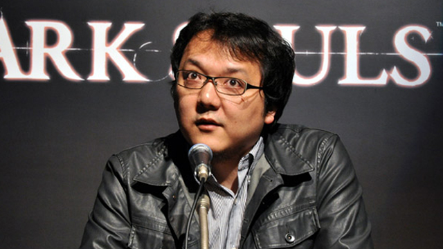
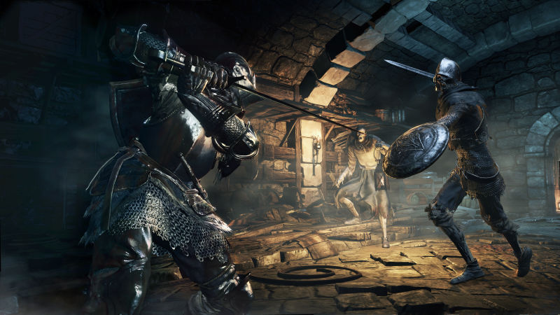

Echoes From Firelink
A simplisitc fan made Dark Souls 3 resource site
News
Miyazaki Gives Clear Answers On The Future Of Dark Souls, Armored Core
Brian Ashcraft - 9/21/16
During a recent round table at Namco Bandai headquarters in Tokyo, I
asked From Software's Hidetaka Miyazaki about the future of Dark Souls,
as well as what else the studio is working on. The good news is yes, a
new Armored Core is coming. The bad news is that, at least for the foreseeable
future, more Dark Souls is not.
At least, not from Miyazaki himself.
The backstory: In 2015, when talking about Dark Souls III, Miyazaki
said it was not the final product for the Dark Souls series,
adding that it was a turning point.
This summer Miyazaki told the
Japanese press he was put[ting] the Dark Souls series on hold for a while.
This is because it was never our real motive for From Software to be the Dark Souls-only company.
This week in Tokyo, when I asked if Dark Souls was finished or if there'd be more,
Miyazaki had more to say.
For me, Dark Souls III is the end,
he said. But that doesn't mean the
end for Dark Souls. If someone other than myself, like another staff member,
wants to make a Dark Souls, then I don't want to deny others from making
future installments.
(Note that when Bandai Namco's interpreter originally translated
this for the other Western journalists at the roundtable,
he left out the part in which Miyazaki said this was the end
of Dark Souls for him at least. I mentioned that Miyazaki did in
fact say that, and the interpreter re-translated that bit for the
other game writers.)
Part of the reason he felt this way, Miyazaki continued, was
because there are people who like Dark Souls very much, and
he doesn't want to unilaterally end the series. I'm also not
saying we should steer clear of making dark fantasy games,
he
added. I'm not ruling that out!
Miyazaki was asked what he thought about how Demon's Souls
and Dark Souls have created their own subgenre and how other
titles appear heavily influenced by Souls series to the point
where the games' basic mechanics seem to appear in other games.
I don't really think that way,
he said. I don't think how we've created a new genre.
If anything, he said, he feels proud that Dark Souls has probably made it
easier for similar titles to come out. There were other developers who
probably wanted to make games like this,
Miyazaki said. If I've created
the environment for those games to be released, then I'm honored.
Regarding the use of Souls mechanics in other games, Miyazaki had
an equally diplomatic answer: Even if the game mechanic is the same,
the approach might be different. For us, that's interesting.
It ends up being research of sorts for the Souls team, who can
see how different developers put their own spin on what the
Souls team has created. I've just never thought about other
games mimicking ours.
Following up on what Miyazaki said earlier this summer, I asked him what
he thought about game studios that continue to churn
out new entries in the same series for years.
It's not bad if you keep making new games in the same series
if you think there is more to add to it,
Miyazaki said,
adding that the reason why he's no longer going to do Dark
Souls is that he doesn't think he can add more to it.
Currently, From Software is working on a couple titles that,
as Miyazaki said, are not just dark fantasy and mecha.
(Though it does sound like they are making a title that
should please Dark Souls fans.) One of the games they are
developing is a little weird,
Miyazaki said.
I asked if the game itself is weird or if it's a weird title for
From Software. When I say 'weird,' the genre might be a little weird,
he replied. The game is weird. But we are diligently making it
in all seriousness, so I just want people to know that when
they think it's strange.
Miyazaki has long wanted to switch up what From Software does.
Back in 2014, he told Famitsu, I feel that From Software's
title lineup will need a little more variation... We have dark
fantasies like Dark Souls, of course, but I'd also like for
us to make more mech games like Armored Core, or Asian style
titles like Tenchu or Otogi: Myth of Demons. From Software
used have a lot more rather quirky titles.
When Famitsu
asked what kind of game he'd like to make, Miyazaki replied,
There are lots of games I'd like to make. I've said this before,
but I'd really like to make a 'warm' game. Something like
Popolocrois or ICO.
Miyazaki added, Also, this is a bit of
a dream, but I'd like to make some kind of analog game. Something
like a board game, a card game, or a tabletop RPG.
The most obvious question, then, was whether or not From
Software was making a new entry in its long-running mecha series.
I asked if they were making a new Armored Core to which he replied,
We are making a new Armored Core. We are still in the early stages
of development.
I asked how early, and Miyazaki replied, I can't
talk about how early it is.
The most recent Armored Core console title, Armored Core: Verdict Day, was released in 2013.
Dark Souls 3 Glitch Lets Speedrunners Completely Break The Game
Patrick Klepek - 6/08/2016

It's been a few months since Dark Souls 3 came out, and speedrunners have
greatly reduced their times due to a glitch that lets them cut
through huge parts of the game. This run took only 36 minutes and
43 seconds!
I've written about Dark Souls 3 speedrunner Distortion2 in the past,
one of the first people to start dismantling From Software's sequel.
He hasn't let up in the months since, slowly bringing down his overall
time. When we last checked in on Distortion2, he'd finished the game
in an hour, 12 minutes, and 36 seconds. Since then, Distortion2 has
halved that.
One of the big reasons Distortion2 is able to pull this off is due to
the teardrop glitch, in which players cast the tears of denial spell
to survive an intentional death. Tears of denial allows the player
to hit 0 HP and recover to 1 HP. This is used by players to exploit
a gap in the world geometry, one that should kill their character,
and break the game.
Distortion2 and other speedrunners are then able to navigate their
way to other parts of Dark Souls 3, skipping many so-called required
bosses.
In a patch that went live yesterday, From Software removed this glitch.
The patch shouldn't stop speedrunners; they can merely refuse to update
the game and play offline. But when the DLC arrives later this year and
speedrunning expands beyond the base game, it'll lead to a splintering
in speedruns. This is natural and often happens with modern games, though.
Dark Souls 3's Patch Notes Are Maddeningly Vague
Patrick Klepek - 6/08/2016
Dark Souls 3 has been getting patches on a regular basis, since the game
was released in April. But for hardcore fans, the release of a patch is
only the beginning; then, the community has to find out what the patches do.
The game's developer, From Software, usually releases patch notes,
but they're often vague and don't point out what's actually changed.
Take this excerpt from the next patch, which drops on Friday:
Adjusted the attack power and skills of fist and claw weapons
OK, yes, it&339;s clear that fist and claw weapons have been adjusted...but
how? Have they been nerfed, reducing their attack power? Did From Software
instead realize they were underpowered, forcing them to buff the weapons?
We’re unlikely to know the answer until the patch arrives, and even then,
if you're someone who wants to know the specific values From Software
shifted around, there's no way to surface that without people data mining.
In the Dark Souls community, Textralia on reddit is one of
the most reliable data miners, putting together comprehensive
posts for the most hardcore.
Since detailed patch notes are a myth at FROM software,
said Textralia in a recent analysis post, I've taken the
liberty of doing a little datamining for the 1.06 regulation
update as promised.
From Software isn't alone in this regard, though. Nintendo has been
famously shy about changes made to the Smash Bros. games,
leading people to wildly (and annoyingly) experiment when
patches are dropped. Here's how Nintendo described a patch
for the 3DS version of Super Smash Bros.:
Adjustments will be made to balance the game.
Other adjustments will be made to make for a more pleasant gaming experience.
It was BS then, and it's BS now. Lots of things about Dark
Souls benefit from mystery, but how the game functions? Balance
changes? C'mon.